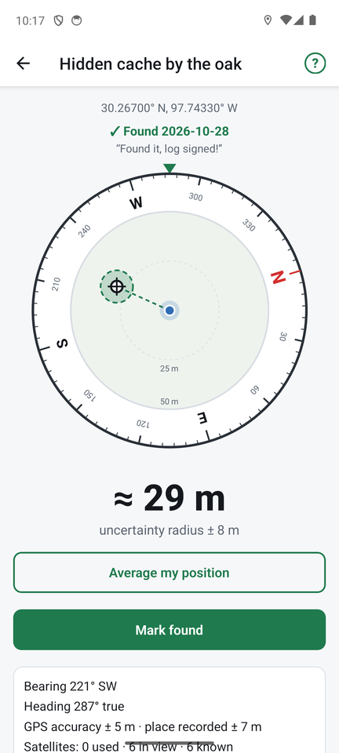

Finding a place
Tap a place in the list to open its compass.

Reading the compass
- The outer ring turns so N, E, S and W always point the real way. Hold the phone flat. If the phone asks you to calibrate, wave it in a figure-8.
- The arrow points at the place. The fixed marker at the top shows where the phone is pointing.
- Distance: below the compass, the approximate distance.
- Uncertainty radius: how close the phone can honestly tell. It combines how accurate your GPS fix is now with how accurate the place was when saved. If you are inside the radius, FindCache tells you to look around.
- Details: bearing, heading, GPS accuracy and how many satellites are used, in view and known. This shows how good your fix is.
The heading and distance are smoothed over a few seconds, so they do not jitter.
The search area
When you are within a set distance of the place (50 m by default, changeable in Settings), the middle of the compass becomes a small map that turns with you:
- you are the blue dot in the centre, with a faint halo for your own GPS uncertainty;
- the place is the ⊕ marker;
- the shaded circle is the search area, as large as the uncertainty radius;
- dashed rings and labels (for example "10 m") show the scale. It zooms in as you get closer.
You can show a street map or satellite picture under it, so the circle lands on real paths and trees: see Maps and offline use.
Average my position while you look
When you are close, tap Average my position and stand still. FindCache averages your readings, so the distance and arrow stop jumping and the radius shrinks over a minute or two. Stop averaging goes back to live readings. If you walk away, averaging stops by itself and says so. Nothing is saved.
Mark found
Tap Mark found to record a find, with an optional comment such as "log signed". The compass then shows "Found" with the date.
With the default setting (Once per place), marking again updates the date and comment. In Settings → Found places you can switch to Keep a log so every find is kept, or turn found places Off.
On the places list, found places show a ✓ line, and Hide found places hides the ones you have found.